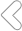

23:00-1:00 [ 照顾好胆经 ]
晚11点后不睡会导致失眠，长期熬夜，会导致口干、口苦、目眩、耳鸣...
1:00-3:00 [ 熟睡保肝 ]
此时若不休息对肝脏的伤害很大!时间久了失眠健忘、感冒、胃肠感染、过敏等...
3:00-5:00 [ 梦里深呼吸 ]
此时保持熟睡，是对肺最好的保护，如果肺气不顺畅，人就会变得黝黑，虚弱等...
5:00-7:00 [ 记得上厕所 ]
这是早上排便的最佳时段。体内的垃圾毒素排不出来，会导致肥胖、易生痤疮等...
7:00-9:00 [ 按时吃早餐 ]
养胃就要按时吃早餐。如果每天早晨都不给胃吃吃东西，容易患胃病和消化道溃疡...
9:00-11:00 [ 喝水6杯 ]
此时是脾工作的时候，喝水6杯可防止四肢发酸、手脚冰凉、嘴唇苍白或暗紫等症状...
11:00-13:00 [ 小憩午睡 ]
心经当令，所以中午不吃饭就会心慌哦！吃饱后短暂午睡可以让身体气血充足...
13:00-15:00 [ 进食了吗 ]
午餐如果吃的过饱会出现消化吸收障碍，从而导致腹胀、腹泻等。建议午餐八分饱...
15:00-17:00 [ 膀胱的调养 ]
若想减肥、排毒可要抓住这个时段，多喝水或酸奶、多尿尿，抖抖身，排排毒...
17:00-19:00 [ 肾的调养 ]
此时是行房事的最佳时刻，你要再喝一杯温水清洗你的肾，减少患肾结石...
19:00-21:00 [ 散步 ]
晚饭后散散步，多拍拍，最好不要抽烟，用冷水洗脸、温水刷牙...
21:00-23:00 [ 千万别怄气 ]
这个时间切记不生气，不狂喜，不大悲，会引起血糖增高，保持安静或听听音乐...